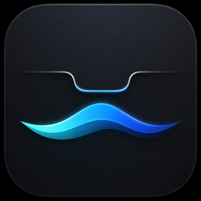

An open-source activity layer for macOS. The notch becomes a calm home for music, system feedback, calendar context, and files.
FlowDock ships without an Apple Developer ID, so macOS reports on first launch that it cannot check the app for malicious software. That is what an unnotarized build looks like — the release is built by a workflow anyone can read, from a tag anyone can rebuild.
Or clear the flag yourself: xattr -d com.apple.quarantine /Applications/FlowDock.app
FlowDock updates itself. It reads a signed feed and installs what you approve; nothing else is downloaded, and there is no account and no analytics.